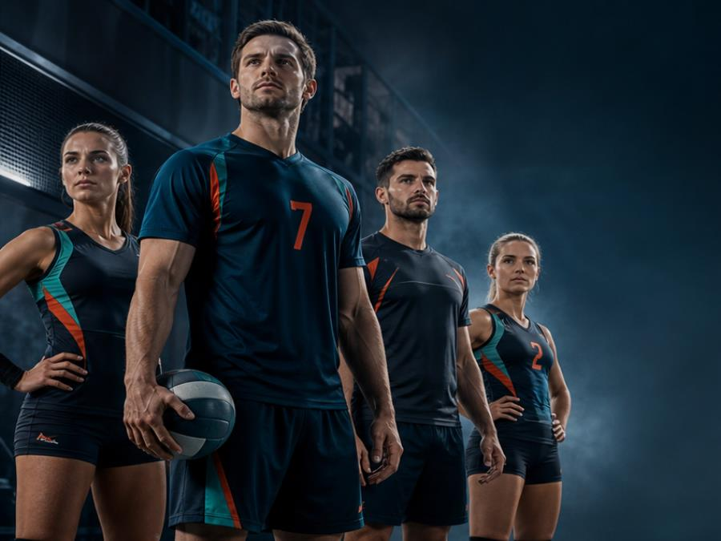
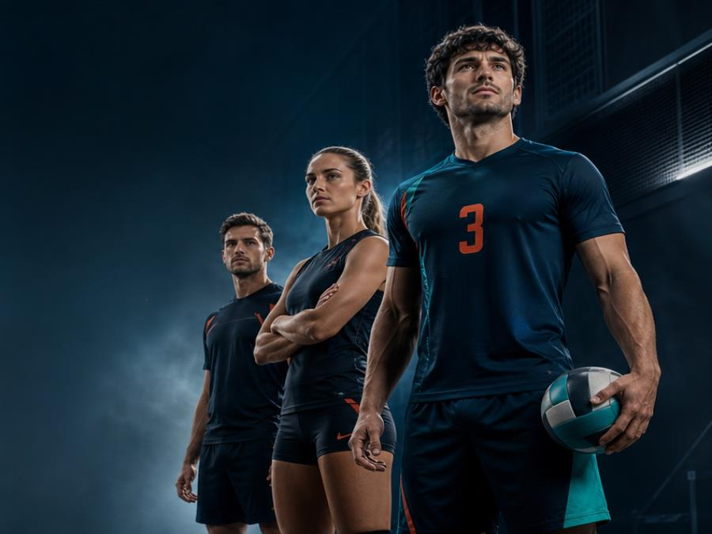
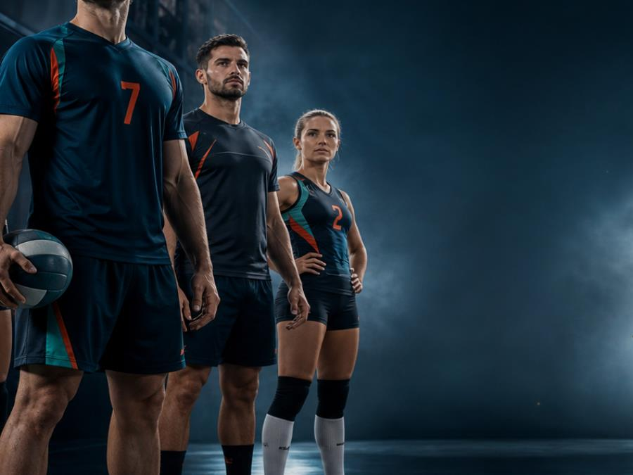

Maria Lopez
Diseñadora Deportiva
Conoce al personal que prepara tus diseños y acompaña cada pedido.
Cada persona cumple una función importante para atender, diseñar y preparar tus productos deportivos.

Diseñadora Deportiva

Atención al Cliente

Diseñadora Deportiva
Consulta nuestros horarios y utiliza el mapa cuando agregues la dirección real.
Dirección:
[Reemplazar por dirección real]
Horario:
Lunes a Sábado - 08:00 a 20:00
Teléfono:
[Reemplazar por teléfono real]
WhatsApp:
[Reemplazar por WhatsApp real]
Aquí podrás mostrar un video corto con el recorrido hasta la tienda.